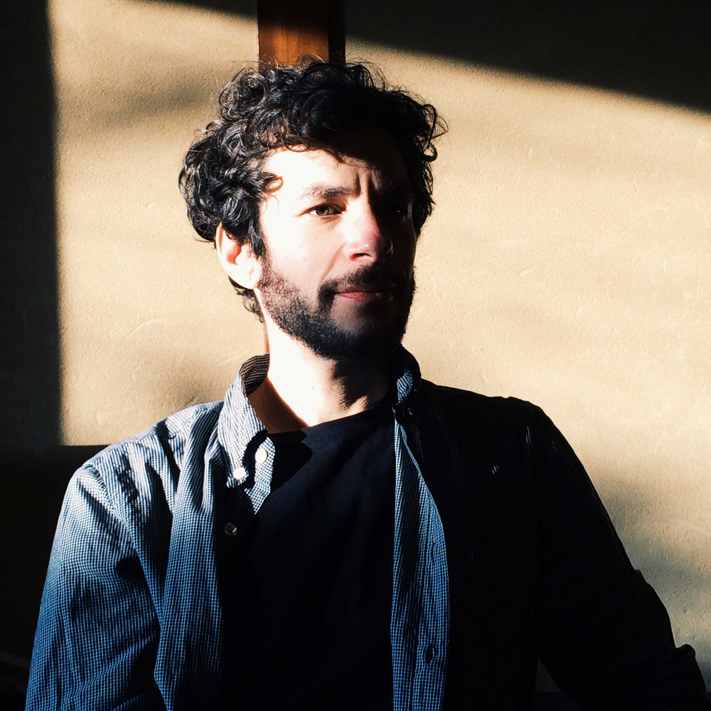

Bio
Randy Bergida, a Brooklyn based musician and songwriter, began recording his first songs in 1999 while living out in a log cabin in the Colestien valley of Mt. Ashland. Rent was little and hitchhiking into town and playing in cafe’s sustained his way.
Being so far from society, he decided to make a move and the most intuitive place was Portland, Oregon. This is where his former band Skidmore Fountain laid roots recording their first record with Tape Op’s very own Larry Crane in 2004. That same year, while touring across the states, he made it to NYC and decided to stay, settling in his home Greenpoint Brooklyn.
Since the inception of his first song, he has released several records including Skidmore Fountain’s “Break” in 2007 and “Cloudless Blue” in 2008, then onto “Firebug” which was released in 2009 under his own name. He founded The Letter Yellow in 2012 releasing their debut “Walking Down The Streets” and then in 2015 “Watercolor Overcast. Fast forward to today, he has two records in motion. One with the Letter Yellow due out in November 2018 called “On the Other Side” and his new project, ‘New Indiana’, has a release due out August 17th, 2018.
Randy Bergida has been performing, teaching, recording, and producing for the past 20+ years. His music has been featured in AM New York and CMJ, played on hundreds of radio stations across the country charting on FMBQ, the winner of Airplay Directs “All Things Digital”, featured on MTV, The Tonight Show, and an “iTunes favorite album” as well as a CD Baby staff favorite.
Randy has recorded with industry heavyweights, including Multi-Grammy award-winning producer Ken Lewis (John Legend, David Byrne, Beastie Boys), Joel Hamilton (Tom Waits, Dub Trio, Blackroc), as well as Tape Op legend Larry Crane (Elliot Smith, Stephen Malkmus). He holds a degree in composition and guitar from the University of Arizona and teaches and produces out of his studio Songwriter Factory in Greenpoint Brooklyn, New York.”